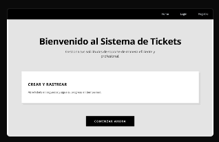

Sistema de Gestión de Tickets
React
Vite
Express
Mysql
JWT Auth
Bcrypt
Vercel
Aiven
Descripción Técnica
Desarrollé una plataforma Full Stack para la gestión centralizada de incidencias técnicas. El sistema permite un flujo de trabajo claro entre los usuarios finales y el equipo de soporte.
Funcionalidades Implementadas
- Seguridad de Capas: Autenticación con JWT y encriptación de contraseñas con Bcrypt para proteger los perfiles de usuario según el rol (Admin/User).
- Gestión de Datos: CRUD completo de usuarios y tickets conectado a Mysql.
- Dashboard: Visualización de métricas de rendimiento y estado de tickets en tiempo real.
